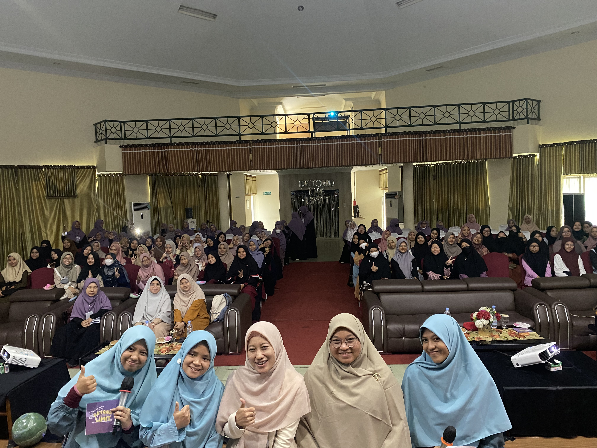
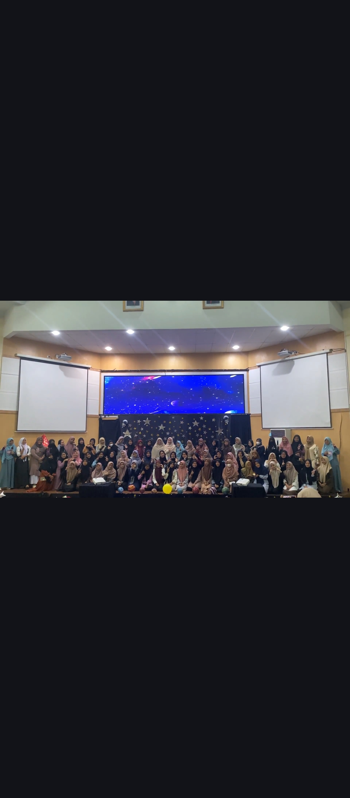
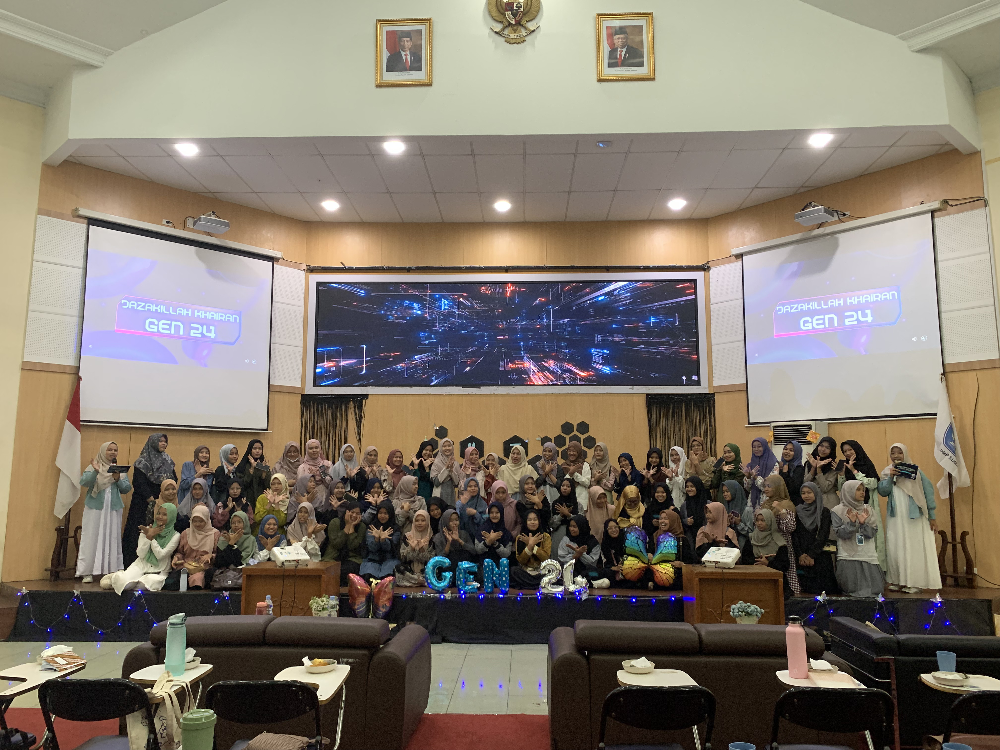
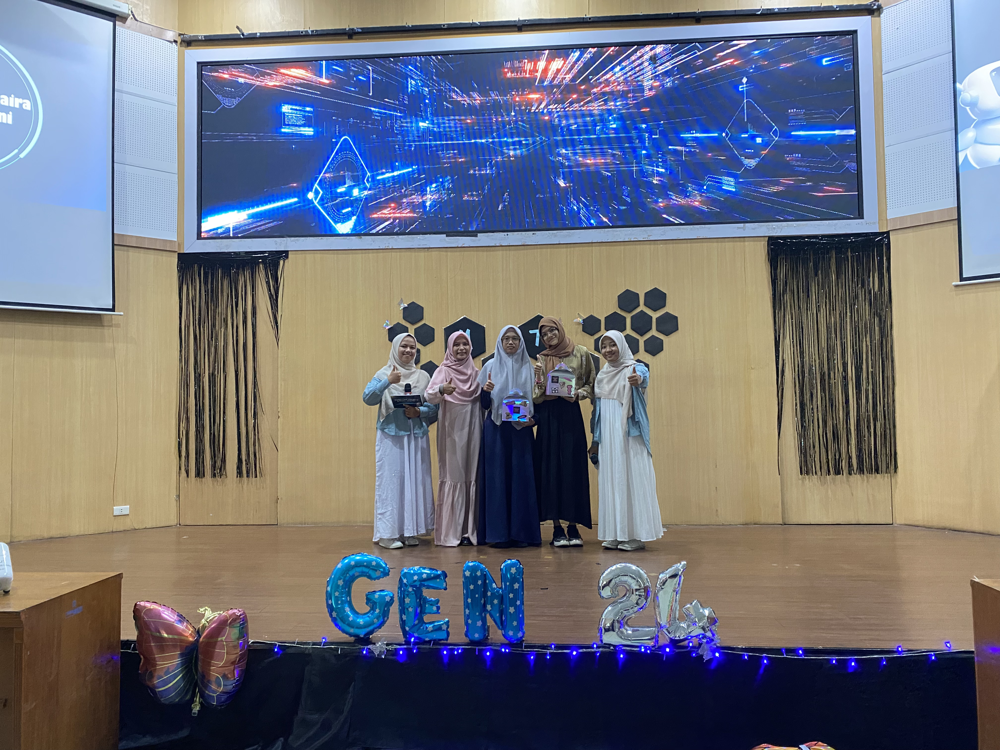
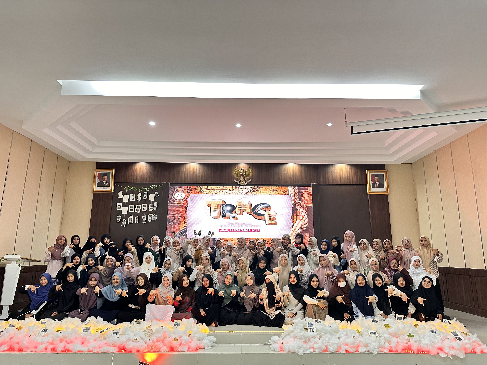

Dokumentasi & Keseruan

Gen-23

Gen-23

Gen-24

Gen-24

Gen-24

Gen-24

Gen-24

Gen-25

Gen-25
"Born by Nurture, Not by Nature"
Sebuah perjalanan untuk menyambut muslimah tangguh yang siap bertumbuh, belajar, dan menemukan lingkungan terbaiknya selama masa perkuliahan.
Menjadi mahasiswa bukan sekadar memasuki dunia perkuliahan. Perjalanan ini adalah proses pembentukan diri.
SUMMIT hadir sebagai ruang penyambutan muslimah baru untuk bertumbuh bersama, mengenal lingkungan kampus, membangun ukhuwah, serta menyiapkan diri menjadi muslimah yang berkontribusi.
Peserta
Mentor
Penuh Inspirasi
Univ. Sumatera Utara
Setiap langkah memiliki makna terdalam
Puncak tertinggi kebaikan dan prestasi yang ingin dicapai bersama.
Perjalanan penuh proses, tantangan, dan pembelajaran berharga.
Lingkungan islami yang subur, saling merawat dan membentuk karakter diri.
Terus bertumbuh secara spiritual dan intelektual agar menjadi muslimah bermanfaat.
Ikuti alur perjalanan dari kaki bukit hingga ke puncak tertinggi

Gen-23

Gen-23

Gen-24

Gen-24
Gen-24
Gen-24
Gen-24

Gen-25
Gen-25
Membangun ekosistem yang mendukung pertumbuhan iman.
Bertemu sahabat satu visi yang saling menguatkan.
Adaptasi perkuliahan dengan tips & trik akademis.
Modal utama menjadi agent of change masa kini.
Kesan Suasana Acaranya :
"Alhamdulillah suasana acaranya seru, hangat, dan nyaman. Kakak kakaknya juga ramah,Jadinya dari awal acarasampai akhir rasanya betah mengikuti setiap sesi."
Kesan Konten Acaranya :
"Kontennya seru dan relate banget sama kehidupan anak muda, saya juga belajar bahwa sebagai pemuda, kita tidak harus dituntut untuk mengikuti tren, tetapi juga kita juga harus memiliki kepedulian dan mengambil peran, sekecil apa pun itu, untuk umat Islam."
Apa hal yang paling Insight Full :
"Saya jadi sadar bahwa kepedulian kepada Palestina tidak hanya lewat doa, tetapi juga bisa dimulai dengan meningkatkan kesadaran di sekitar kita lalu sebagai pemudi muslim, kita juga punya peran untuk peduli terhadap isu isu umat, bukan hanya sibuk dengan hiburan dan saya juga termotivasi untuk lebih peduli terhadap saudarasaudara di Palestina."
Pesan untuk Maba 2026 :
"Selamat datang di dunia perkuliahan Nikmati setiap prosesnya, jangan takut mencoba hal hal baru, dan jangan ragu ikut kegiatan yang bermanfaat. Semoga kalian menemukan teman teman yang baik, lalu yang semangat belajar, dan pastinya membuat kita semakin mendekatkan diri kepada Allah, dan semoga perjalanan kuliahnya dipenuhi banyak cerita seru dan berkah. Semangat, Maba 2026 ❤️"
Mahasiswa Baru USU 2025
Kesan Suasana Acaranya :
"Alhamdulillah suasana acaranya sangat menyenangkan. Sejak awal para mahasiswi muslimah disambut dengan hangat sehingga suasananya terasa nyaman, akrab, dan membuat saya betah mengikuti setiap rangkaian acara."
Kesan Konten Acaranya :
"Materi yang disampaikan sangat bermanfaat dan membuka wawasan saya tentang pentingnya peran mahasiswa sebagai agen perubahan. Saya jadi memahami bahwa menjadi mahasiswa bukan hanya mengejar prestasi akademik, tetapi juga terus memperbaiki diri dan memberikan kontribusi yang baik bagi masyarakat."
Apa hal yang paling Insight Full :
"Insight yang paling saya dapat adalah bahwa banyak permasalahan yang terjadi saat ini disebabkan oleh sistem kapitalis yang hanya berorientasi pada manfaat. Melalui acara ini, saya memahami bahwa sebagai mahasiswa muslim, kita memiliki tanggung jawab untuk memperjuangkan perubahan dengan mengganti sistem tersebut kepada sistem yang terbaik, yaitu sistem Islam, sehingga dapat membawa kebaikan bagi umat."
Pesan untuk Maba 2026 :
"Selamat datang, Maba 2026. Jangan ragu untuk aktif mengikuti berbagai kegiatan positif seperti ini. Manfaatkan setiap kesempatan untuk belajar, berkembang, dan menambah wawasan. Tetap semangat menjalani perjalanan perkuliahan dengan niat yang baik, penuh rasa syukur kepada Allah SWT, serta jadilah mahasiswa yang membawa perubahan ke arah yang lebih baik. Semangat Maba 2026 ❤️"
Mahasiswa Baru USU 2023
Kesan Suasana Acaranya :
"Kerennnn bangettttt! 😭✨ Aku benar-benar takjub sama keseluruhan acaranya. Mulai dari exhibition-nya yang keren, konsep acaranya, sampai nuansa AI dan teknologinya yang bikin aku makin excited. Soalnya aku memang suka banget sama hal-hal yang berbau teknologi, jadi rasanya betah banget dari awal sampai akhir. Pokoknya keren parah!"
Kesan Konten Acaranya :
"Materi yang disampaikan relate banget, apalagi buat aku yang waktu itu masih maba. Banyak hal baru yang sebelumnya belum aku tahu, jadi benar-benar bermanfaat dan membuka wawasan. Setelah ikut acara ini, aku jadi punya sudut pandang baru tentang dunia perkuliahan dan peran mahasiswa."
Apa hal yang paling Insight Full :
"Hal yang paling berkesan buat aku adalah pembahasan tentang Palestina. Aku jadi sadar kalau kepedulian kepada Palestina bukan cuma sebatas rasa simpati atau doa, tapi juga dimulai dari kesadaran untuk peduli terhadap isu-isu umat Islam. Sebagai mahasiswa, kita punya peran untuk terus belajar, menyebarkan kesadaran, dan tidak bersikap acuh terhadap saudara-saudara kita yang sedang mengalami kesulitan."
Pesan untuk Maba 2026 :
"Welcome, Maba 2026! 🤍 Dunia perkuliahan itu nggak seseram yang dibayangin kok. Justru bakal ada banyak pengalaman seru, teman-teman baru, dan kesempatan untuk berkembang. Jangan takut mencoba hal-hal baru, ikut organisasi, kepanitiaan, atau kegiatan yang bermanfaat. Karena di masa kuliah inilah kalian bisa banyak belajar, menemukan potensi diri, dan menciptakan pengalaman yang mungkin nggak akan terulang lagi. Semangat menikmati setiap prosesnya ya! ✨"
Mahasiswa Baru USU 2024

"SUMMIT benar-benar mengubah cara pandangku tentang dunia kampus..."
Mahasiswa Baru USU 2025
Ya, betul sekali. SUMMIT dirancang khusus sebagai wadah akselerasi diri dan ukhuwah untuk menyambut mahasiswi muslimah (akhwat) baru.
Prioritas utama kami adalah mahasiswa baru lingkup kampus USU, namun kami sangat terbuka untuk mahasiswi umum yang ingin mencari atmosfer sircle positif.
Disarankan menggunakan pakaian muslimah yang rapi, sopan, menutup aurat secara sempurna, dan tentunya nyaman dipakai seharian dengan nuansa earth tone (hijau/cream).